- 00000018WIA30CDB030GYZ
- id_123742531.7
- Dec 12, 2024, 3:42:18 PM
PET/MR Emergency Stop Bypass Troubleshooting
| Required persons | Preliminary requirements | Procedure | Finalization |
|---|---|---|---|
| 1 | Not Applicable | 60 minutes | Not Applicable |
| Item | Quantity | Effectivity | Part number | Manufacturer |
|---|---|---|---|---|
| 15-Pin Sub-D Female Jumper | 1 | - | - | - |
| 15-Pin Sub-D Male Jumper | 1 | - | - | - |
| Digital Multimeter | 1 | - | - | - |
| Jumpers are normally stored in the PGR cabinet. These come with the system and are not FRUs. | - | - | - | - |
This document describes troubleshooting procedures for Emergency Stop (E-stop) errors. The E-stop circuit, when activated, removes power from the Gradient, RF, PET, and patient handling components. To restore power, the EMO reset button must be pressed on the front of the PDU. A message indicating that system is in EMO reset state is also posted to the system message log.
If the error is posted to the system message log, but power to the gradient, RF, and patient handling components is not removed, the error is not an E-stop event and the system is not in an E-stop state.
Troubleshooting the E-stop circuitry consists of three functional areas: Equipment Room, Scan Room, and Operator (Control) Room. During normal operation, one of the following can cause an E-stop event:
-
E-stop button was pressed on the SCIM.
-
E-stop button was pressed on the magnet enclosure.
-
XGA fan, XGA fan tachometer, or fan rack fuse failed.
-
Both PDU fans or both PDU fan tachometers failed.
-
Hardware malfunctioned somewhere in E-stop circuit.
-
PET leak detection occurred.
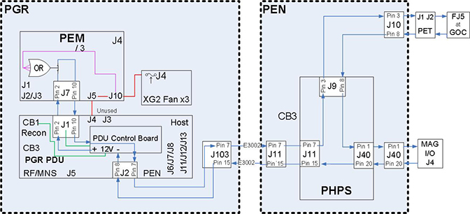
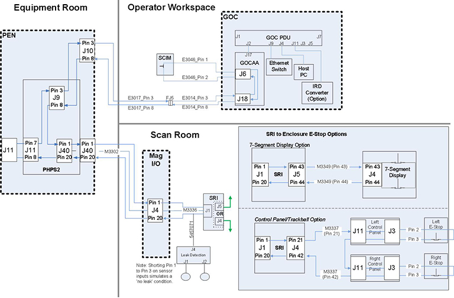
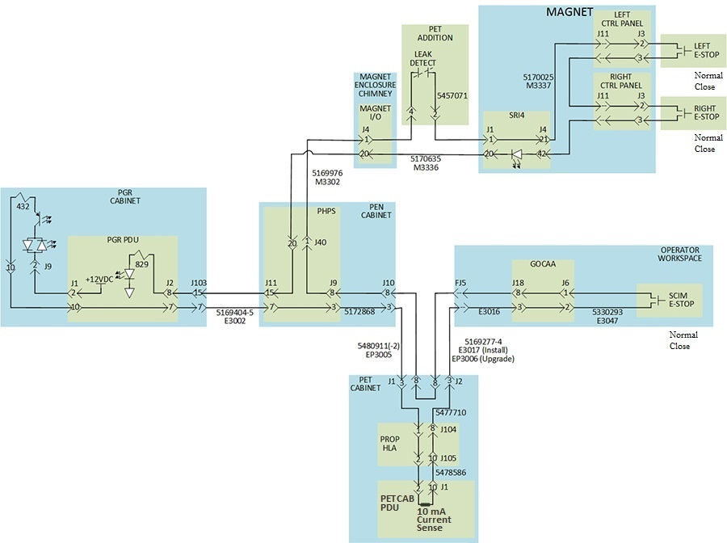
System E-Stop Bypass Test
This test is performed to determine the condition of the E-stop circuitry in the PGR Cabinet or Magnet Enclosure.
- Power off the PDU.
- Disconnect Cable E3002 from connector J103 located on the connector
panel on the top of the PGR Cabinet.
Figure 4. PGR Cabinet Connector Panel 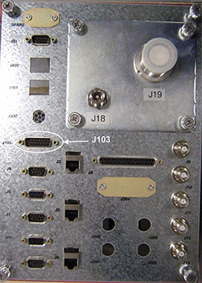
- Connect the 15-pin sub-D female jumper to J103 on the PGR cabinet
connector panel to bypass all external components, with exception
of the auxiliary module or PEM module, from the E-stop circuit
Note
Jumpers are normally stored in the PGR Cabinet. These come with the system and are not FRUs.
Figure 5. 15-Pin Sub-D Female Jumper 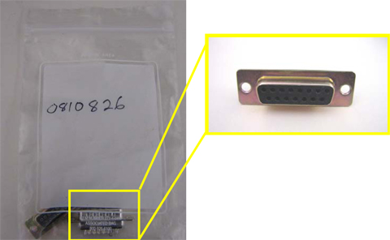
- Power on the PDU.
- Press the green EMO Reset button on the front of the PDU to reset the E-stop circuit.
- Verify operation of the E-stop circuit, and confirm power is
On for the RF Amplifier and Patient Handling Power Supply (PHPS).
Refer to the flowchart below.
Figure 6. Troubleshooting Flowchart 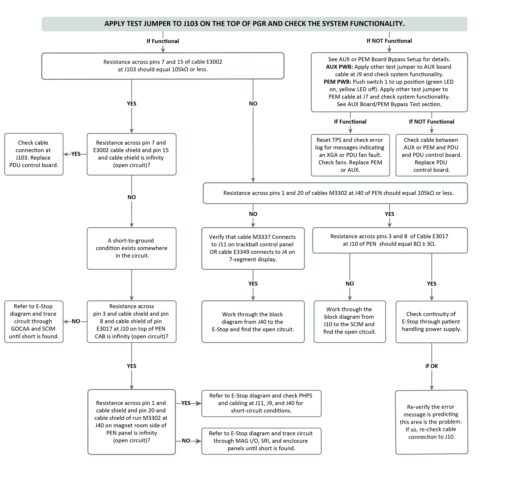
If the system is not functional and the error still displays, proceed to Auxiliary Board/PEM Bypass Test.
If the system seems functional and the error disappears, proceed to Resistance Test.
Auxiliary Board/PEM Bypass Test
Perform actions described in this section when using supplied male sub-D male jumper to bypass PEM from E-Stop circuit as described in top, right side of flowchart in Troubleshooting Flowchart. Do not perform these actions for bypassing AUX module. No additional actions are required to bypass the AUX module other than connecting sub-D male jumper to cable removed from AUX module J9 as described at top, right of flowchart in Troubleshooting Flowchart.
- Perform LOTO on the PGR cabinet. See Applying LOTO - PGR Power Distribution Unit (PDU)/Gradient Subsystem.
- If the system is hung in an E-stop event, or the E-stop is not
working, after replacing a PDU control board:
- Verify the switches and jumpers on the PDU control board are oriented properly.
- Ensure Switch 1 is in the up position (green LED).
Figure 7. XGD2 Configuration for 5343114-6 Control Board 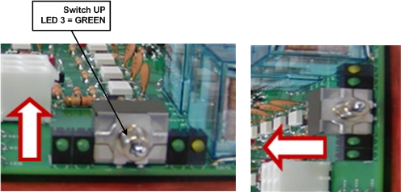
- Disconnect Cable E3017 from Connector J9 on the Auxiliary Printed
Wiring Board (PWB) or J7 of the Power Equipment Monitor (PEM) PWB.
Figure 8. Auxiliary PWB 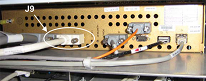
Figure 9. PEM PWB 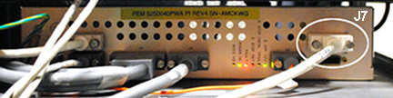
- Connect the 15-pin Sub-D male jumper to Cable E3017 from Connector
J9 that was disconnected from the auxiliary PWB (or J7 of the PEM
PWB) in the above step.
Figure 10. 15-Pin Sub-D Male Jumper 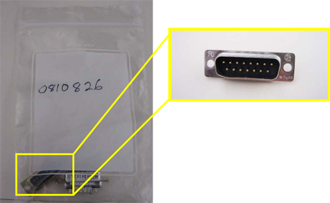
- Remove LOTO and restore power to the PGR Cabinet. See Removing LOTO - PGR Power Distribution Unit (PDU)/Gradient Subsystem.
- Press the green EMO Reset button on the front of the PDU to reset the E-stop circuit.
- Verify operation of the E-stop circuit, and confirm that power
to the RF Amplifier and PHPS
power is On. (See Troubleshooting Flowchart for a flowchart of troubleshooting activities.
If the system is functional, perform a TPS reset,check the error log for XGA fan faults, and check the operation of the fans in each XGA fan rack. (Auxiliary or PEM board failure is possible, but unlikely.)
If the system is not functional and the error does not disappear, check the Auxiliary or PEM PWB cable by powering them down. If the cable is good, replace the PDU control board.
PET Cabinet Bypass Test
Refer to the illustration below to perform this test.
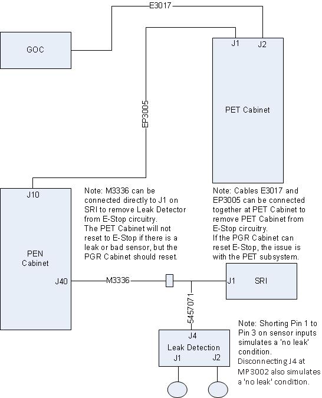
- Connect J1 and J2 at the top of the PET Cabinet.
- Remove the leak sensor pigtail at J1 of the Scan Room Interface
Resistance Test
This test is performed to determine the condition of the E-stop circuit.
- Power down the PGR Cabinet and apply LOTO. See Applying LOTO - PGR Power Distribution Unit (PDU)/Gradient Subsystem.
- Using a multimeter, Check the resistance between Pins 7 and
15 of Cable E3002 (disconnected from J103 on the connector panel located
on top of the PGR Cabinet).
Resistance should read 105k ohms or less. If the reading is out of range, proceed to the next step.
If the reading is within range, verify that the error message indicates an E-stop issue. If it does, check Cable E3002 connectivity to J103.
- Using a multimeter, verify the resistance between Pins 1 and
20 of Cable M3302 (disconnected from connector J40 on the PEN Panel).
Resistance should read 105k ohms or less.
If the reading is out of range, proceed to the next step.
- Verify that Cable M3337 is connected to J11 on the E-stop control
panel.
- Check that the E-stop cable connection and the trackball cable connection are not interchanged since they are the same size and gender.
- Confirm that the cables are connected properly, or the E-stop circuit will not reset.
Figure 12. E-Stop Control Board 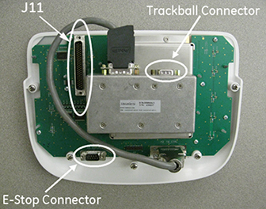
- If the system is equipped with the trackball option, repeat 4. If the system does not have the trackball option, verify that Cable E3349 connects to J4 on the 7-segment display panel.
- Referring to the wiring diagram below, begin at J40 of the PEN
Panel and work through the E-stop circuit to each E-stop enclosure,
looking for the open circuit.
Figure 13. PEN Panel to Magnet Enclosure E-Stop Wiring Diagram 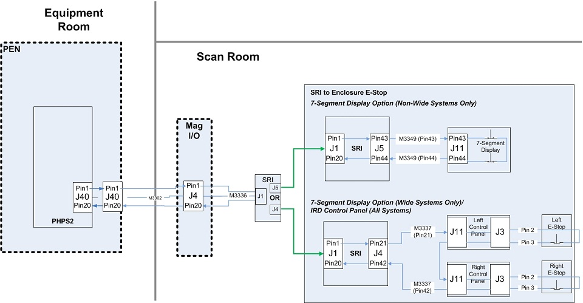
- Check the continuity of E-stop paths between the J9, J11, and
J40 connectors on the PHPS with a multimeter. If necessary, refer
to the complete E-stop diagrams located in the Power section of Interactive Block Diagrams on the Service Methods
DVD for relevant connector pins.
If the reading is within range, proceed to the next step.
If the reading is out of range, refer to the wiring diagram below, and begin at J10 of the PEN Panel and work through the E-stop circuit to the SCIM E-stop, looking for the open circuit.
Figure 14. E-Stop Wiring Diagram from PEN Panel to SCIM 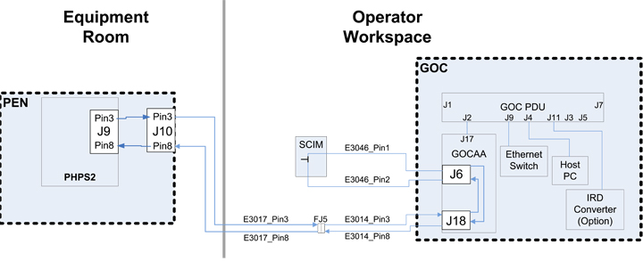
- Check the continuity of the E-stop connections throughout the
PHPS with a multimeter.
If connections are good, verify that the error message is indicating an E-stop issue. If it is, check Cable E3017 connectivity.
If connections are not good, replace the PHPS.
- Remove LOTO and restore power to the PGR Cabinet. See Removing LOTO - PGR Power Distribution Unit (PDU)/Gradient Subsystem.
Finalization
No finalization steps.